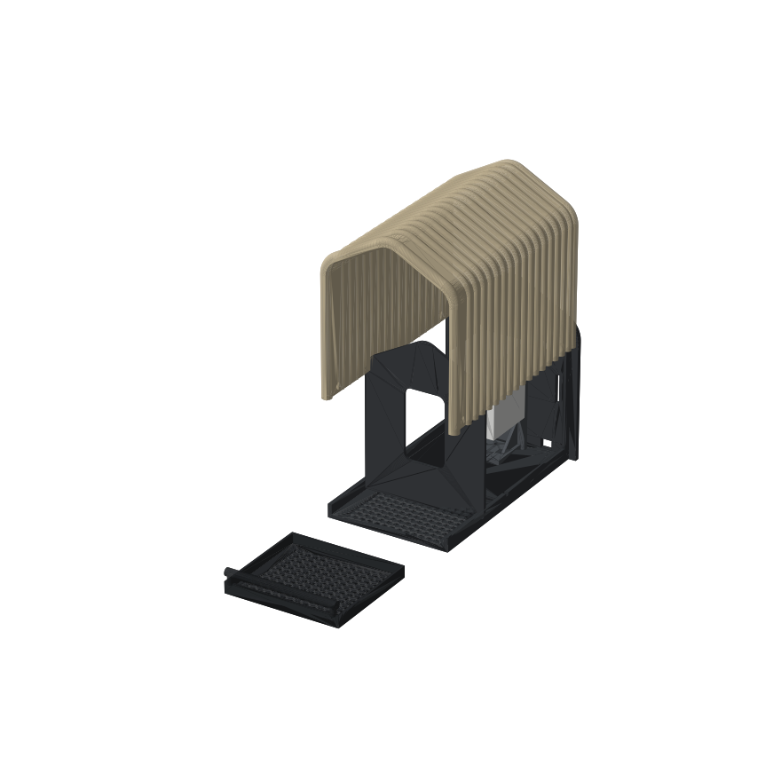
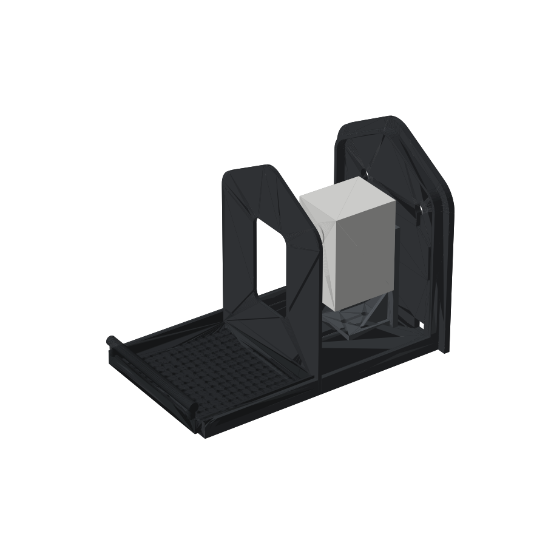

“the birdwatcher”
A 3D-printed bird feeder with a eufyCam 2C Pro tucked inside its roof. It is a present for my grandparents in Denmark, so they can watch the garden birds up close in the eufy app. A small solar panel keeps the camera charged.
Design
The style is inspired by ribbed, house-shaped camera feeders, but the geometry is drawn from scratch around the eufyCam 2C Pro, which is tall and has a ¼″-20 thread on the back. The camera sits in a dry bay at the back and looks out through a window at the seed tray and perch.


Parts
Five printed parts. All of them fit the Bambu Lab X2D bed and are already turned the right way up in the STL and 3MF files.
| Part | Colour | Print size (mm) | Orientation | Notes |
|---|---|---|---|---|
Printing
PETG is fine for test-fitting and a season outside. ASA handles UV and Danish summers without fading or going brittle, so the gift version will be printed in ASA. Both print well in the enclosed X2D, and its two nozzles let the sand hood and the charcoal parts print in their own colours.
| PETG (now) | ASA (final) | |
|---|---|---|
| Nozzle | 240–250 °C | 250–260 °C |
| Bed | 70–80 °C, textured PEI | 90–100 °C, textured PEI |
| Chamber | door can stay ajar | closed, let it warm up |
| Walls / top / bottom | 4 walls · 5 top · 4 bottom layers (weather-tight) | |
| Infill | 15–20 % gyroid | |
| Supports | none expected; check the cable notch and keyholes in the slicer | |
| Status | on the shelf | to buy |
Camera & solar
All the electronics are in the camera. The only wiring is the solar panel's 3 m cable, which goes into the camera's micro-USB port on its underside.
The model leaves 35 mm under the camera for the plug and the bend in the cable. The cable runs across the floor and out through a notch at the back.
Denmark sits at about 56° N, so in December the sun hardly clears the trees. A steep panel catches more of the low sun and sheds snow. Expect to top up the battery by USB now and then in mid-winter.
CAM_THREAD_Z.Weather
Assembly
Visitors
Common feeder birds in Danish gardens. Sunflower seeds and fat balls (without the net) bring most of them.
Ideas & open questions
Downloads
3MF or STL open straight in Bambu Studio. STEP is the editable CAD file, so open that one in Layerling if you want to change something.
| Part | 3MF | STL | STEP |
|---|---|---|---|
| 3mf | stl | step | |
| Everything | all-parts.3mf | — | assembly.step |
The model is generated from cad/feeder.py (build123d). Every size in this page comes from the parameters at the top of that file.